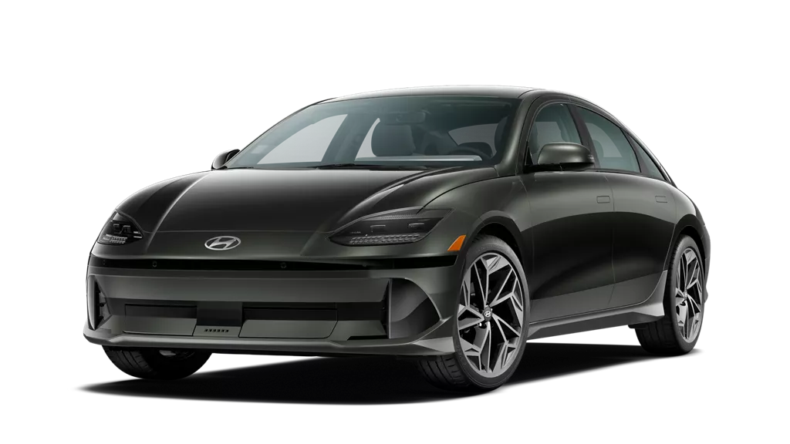
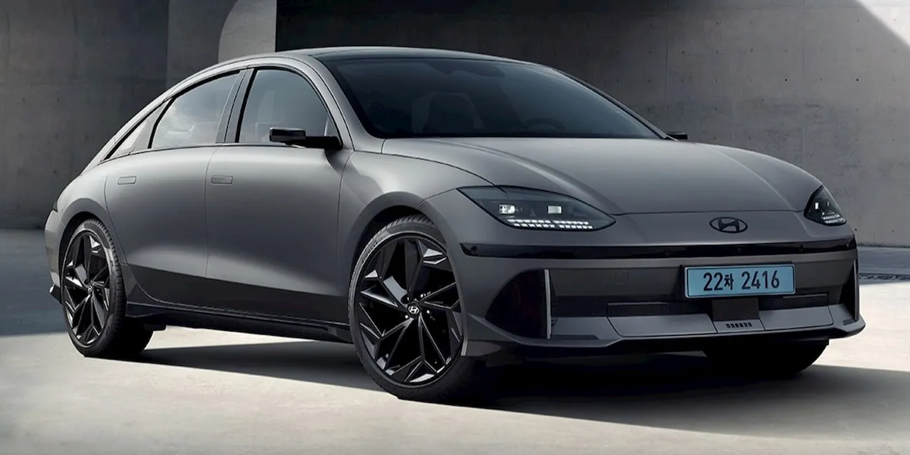
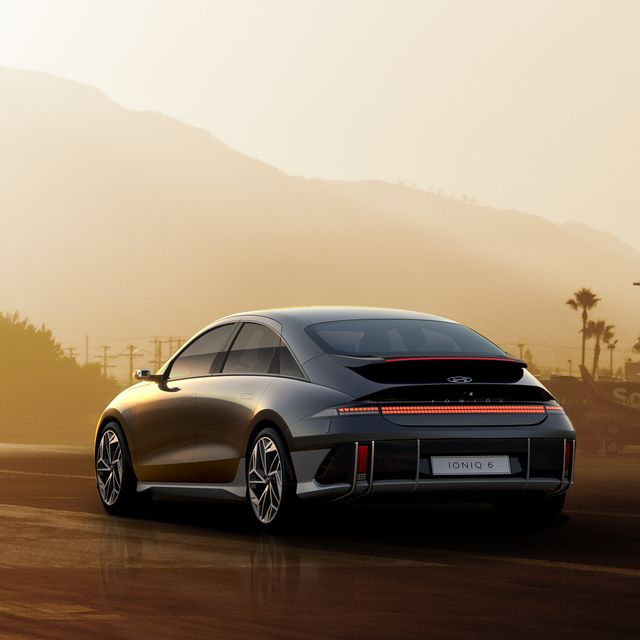
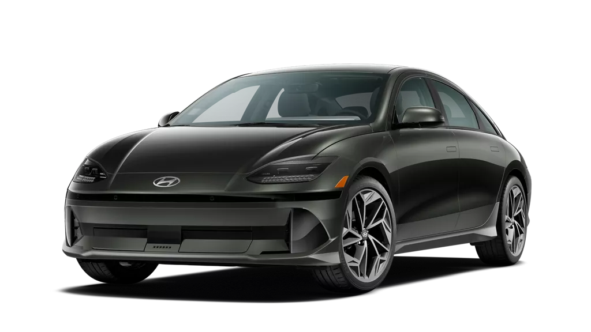
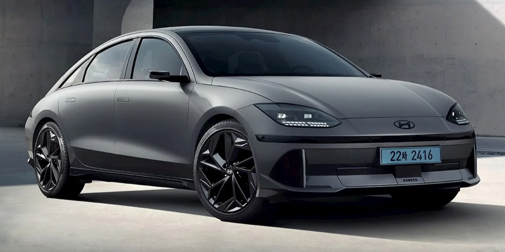
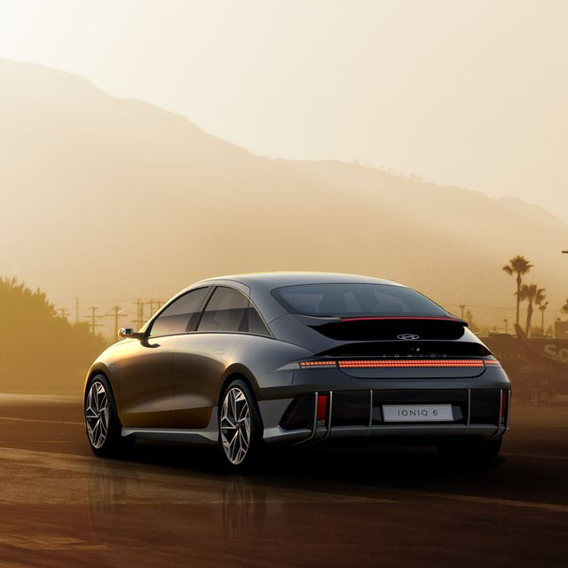

Overview
The Hyundai IONIQ 6 emerges as a beacon of modern electric vehicle design, melding aesthetics with aerodynamics to redefine eco-friendly transportation. Characterized by its distinctive streamliner silhouette, the IONIQ 6 is engineered to maximize range efficiency through its sleek, low-drag shape. Beyond its exterior, the vehicle is built on Hyundai’s dedicated Electric-Global Modular Platform (E-GMP), which allows for a spacious interior, characterized by flat floors and adjustable seating configurations. This platform not only enhances passenger comfort but also improves vehicle stability with its low center of gravity, making the IONIQ 6 a paragon of both design innovation and driving pleasure. With a focus on sustainable materials and advanced technology, the IONIQ 6 is designed to appeal to environmentally conscious drivers seeking a future-oriented vehicle without compromising on style and performance.
Features
The Hyundai IONIQ 6 is packed with advanced features aimed at enhancing safety, performance, and comfort. At the heart of its technology suite is an ultra-fast charging system that can charge the battery from 10% to 80% in just 18 minutes under ideal conditions, thanks to its 800V charging capability. The car also includes an array of smart driving assists such as Highway Driving Assist II, which helps maintain a safe distance from other vehicles while keeping the car centered in its lane, and Forward Collision-Avoidance Assist, which uses sensors and cameras to prevent accidents. Inside, the IONIQ 6 offers a premium audio experience with a Bose sound system and features a customizable ambient lighting system that can adjust to the driver’s mood and preferences. Additionally, the vehicle’s infotainment system supports dual Bluetooth connections and includes state-of-the-art navigation systems that offer real-time traffic updates and route recommendations. Each feature in the IONIQ 6 is thoughtfully integrated to ensure that drivers enjoy a seamless blend of comfort, convenience, and advanced technology.
Gallery

 





Specifications
Est. Rnage: 361 miles Power up to 320 hp Cargo Volume: 6 cu-ft